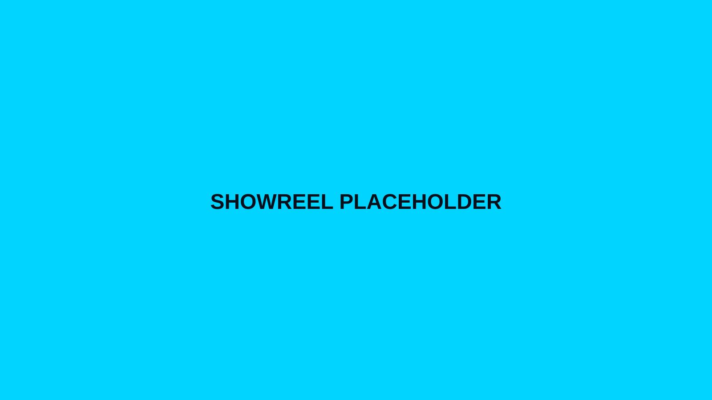
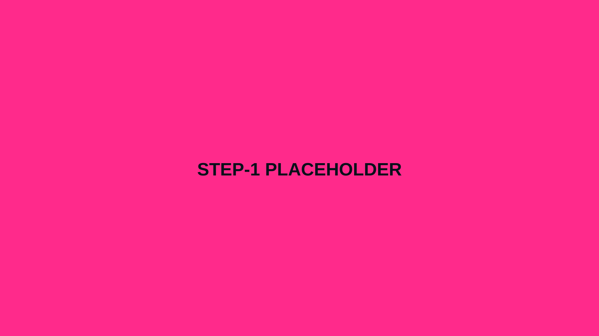
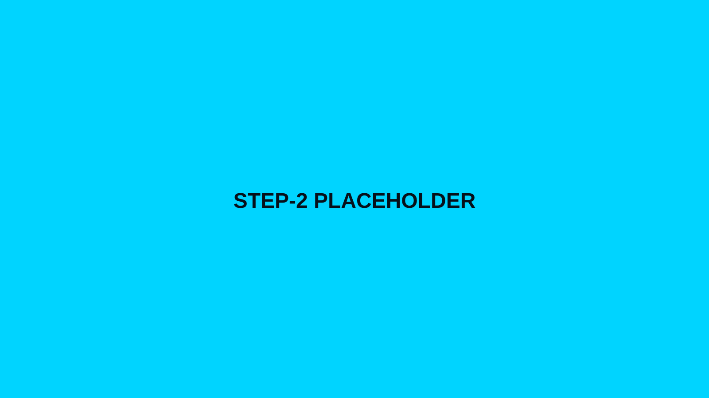
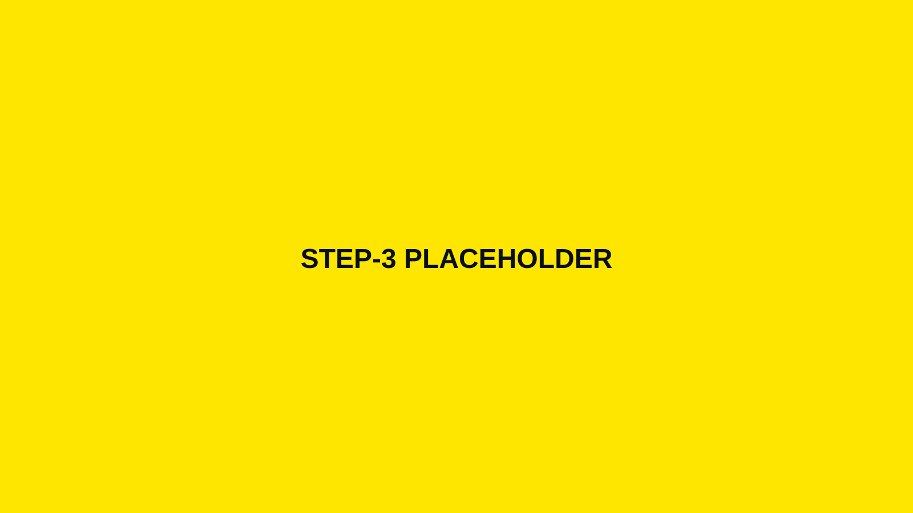
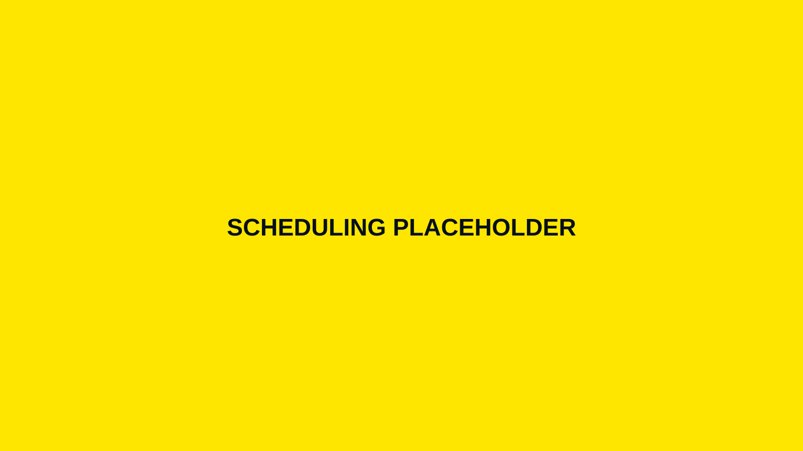

Hosted 3D viewer link
Share with stakeholders instantly. Optional access controls for private projects.
- Fast web loading
- Works on desktop + mobile
- Easy sharing

How it works
We handle capture, processing, and hosting as one integrated service—so you get a dependable digital twin without stitching tools together.

Designed to minimize disruption, reduce rework, and deliver a consistent viewing experience.

We confirm goals, coverage, constraints, and outputs. You get a simple capture plan (zones, access notes, and schedule).

We capture interiors, exteriors, or both. For active sites, we coordinate around safety rules and access windows.

We clean and optimize the model for fast web delivery, publish it to a hosted viewer, and package any requested exports.
Deliverables depend on your package and scope, but most projects include the following.
Share with stakeholders instantly. Optional access controls for private projects.
Use your model in a website, client portal, or presentation deck.
Archive the data or integrate with other workflows where applicable.
Most single-location projects move quickly once scope is confirmed. Larger or multi-zone facilities may be staged for consistency and access.
Need a hard deadline? Tell us up front—turnaround can often be accelerated if access and scope are clean.
Request a schedule →
Send the location, approximate size, and what you need the model to accomplish—we’ll recommend the best approach.